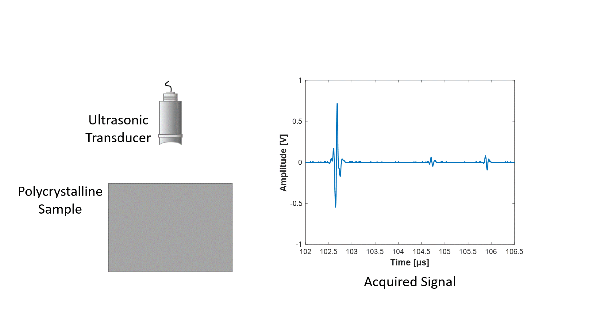

Ultrasonic Scattering and Attenuation
Ultrasound is a sound wave having a frequency of beyond 20000 Hz. Just like normal speech sounds echo is also noticed in case of ultrasound. Using the echo of the ultrasound different information about the body under investigation (materials, ceramics, biomaterials etc) can be obtained. It is one of the most popular non-destrctive methods. Ultrasound is used widely in various industries for detection and identification of defects in polycrystalline materials.... But my research interest lies in qualifying polycrystalline materials through ultrasound. Using an ultrasonic transducer ultrsonic signal can be transmitted and received. When ultrasound travels inside a polycrystalline material it scatters in all direction. From the reflected signal of the wave the information about the microstructure of the material can be quantified. Two of the main properties of ultrasound is its phase velocity and attenuation. Using these properties of ultrasound the microstructural properties of a material can be predicted. Ultrasonic wave scatters when it passes through the grains of polycrystalline materials. Grain boundaries are the main sources of ultrasonic scattering and attenuation. Ultrasonics theories like Weaver's model is specially helpful for understanding ultrasonic responses in polycrystalline materials. Noruzian and Turner developed the modifications necessary to apply ultrasonic theories to calculate phase velocity and attenuation using the discrete synthetic microstructures for cubic polycrystalline materials. The goal of my research is to further this approach of developing and testing the ultrasonic theories applicable to discrete synthetic microstructures for complex polycrystalline materials. The animation in this page is my lazy approach towards describing the ultrasonic properties. However, Iowa State University has built a great website regarding all the NDT techinquies. I would highly encourage interested readers to go through different sections in their website.

Synthetic Microstructures
As I have mentioned before the ultimate goal of the research is to be able to predict the microstructural properties based on the experimental ultrasonic measurements. Hopefully one day our group will be able to provide all microstructural information -(grain statistics, texture, defects, phases) just by performing some ultrasonic measurements on the sample. But thats far away in future. There are many pieces of the puzzle that needs to be figured out before that. To make prediction the relation between theoretical ultrasonic responses and experminetal responses need to be established. Most of my research works is computational based and requires the use of synthetic vloumes. DREAM.3D and Neper are two of the most prominent softwares for creation of two and three dimensional synthetic microstructures. Microstructures having different crystal symmetries with realistic euler angles and texture can be generated using these softwares. I use the theoretical ultrasonic scattering models to numercially calculate the ultrasonic responses on these synthetic microstructures. Below you will find some of the codes used for creating synthetic microstructures of different tessellations.
High Performance Computing
As part of the researcher's community at University of Nebraska-Lincoln I have acess to Holland Computing Center (HCC). HCC is a High Performace Computing center which is based on SLURM. For simulating synthetic microstructures with large number of grains and for numerical calculation of ultrasonic phase velocity and attenuation HCC is super effective.
High Throughput Computing
Recently, I was invited to attend the Open Science Grid(OSG) school in 2019. OSG is a platform dedicated to allow researchers to utilize idle super computing resources. Using High Throughput Computing(HTC) OSG gives access to super computing power without any charge. Below is the group photo of the school participants.